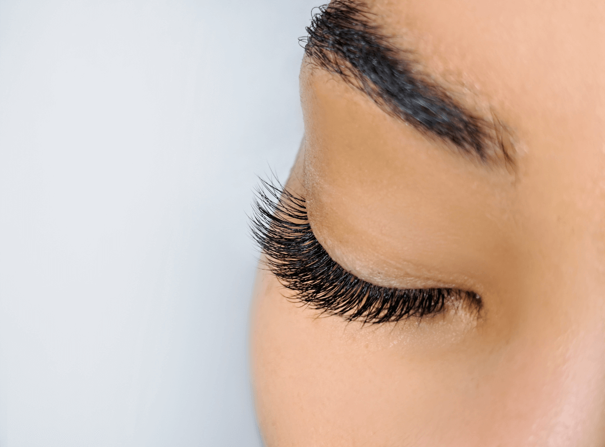

¿Sueñas con unas pestañas curvadas y definidas que resalten tu mirada de forma natural? ¡Entonces el Lash Lifting es la técnica perfecta para ti! En nuestro último post, te adentramos en el maravilloso mundo del Lash Lifting, una técnica revolucionaria que te permite lucir unas pestañas increíblemente hermosas y curvadas, sin necesidad de extensiones.

El Lash Lifting es un procedimiento sencillo y efectivo que se lleva a cabo en el salón de belleza por un profesional capacitado. El proceso comienza con la limpieza suave de las pestañas para eliminar cualquier residuo de maquillaje o aceite. A continuación, se aplican almohadillas de silicona en los párpados superiores para levantar y curvar las pestañas.
Una vez que las almohadillas están en su lugar, se utilizan productos específicos, como soluciones acondicionadoras y fijadoras, para moldear las pestañas y fijarlas en la posición deseada. El profesional trabaja meticulosamente para asegurarse de que cada pestaña esté correctamente alineada y curvada, creando así un efecto de ojos más abiertos y una mirada más expresiva.
El proceso completo suele tardar alrededor de 45 minutos a una hora, dependiendo de la longitud y la densidad de las pestañas. Una vez finalizado, puedes disfrutar de unas pestañas naturalmente curvadas y definidas que realzan tu belleza de manera sutil pero impactante.
Pestañas curvadas y definidas: El principal beneficio del Lash Lifting es la curvatura natural que le brinda a tus pestañas, creando una apariencia más abierta y definida en tus ojos sin la necesidad de rizadores.
Aspecto más juvenil: Al levantar las pestañas desde la raíz, el Lash Lifting puede hacer que tus ojos luzcan más grandes y brillantes, lo que te proporciona un aspecto más juvenil y fresco.
Resultados duraderos: A diferencia del rizado de pestañas tradicional, que solo dura unas pocas horas, los resultados del Lash Lifting pueden durar hasta ocho semanas, lo que te permite disfrutar de unas pestañas perfectamente curvadas durante mucho más tiempo.
Compatible con el maquillaje: Una vez que te haces el Lash Lifting, puedes seguir utilizando máscara de pestañas y otros productos de maquillaje como de costumbre, lo que te permite realzar aún más tu mirada según tus preferencias.
Procedimiento no invasivo: El Lash Lifting es un procedimiento no invasivo que no requiere el uso de extensiones de pestañas ni adhesivos fuertes, lo que lo hace seguro y cómodo para la mayoría de las personas.